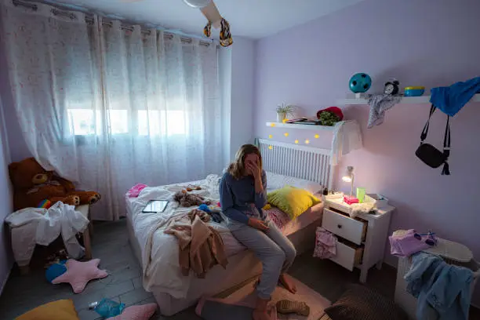

Some loves are not meant to last, but they leave a forever in our hearts. Here, we gather the broken pieces, the words left unsaid, the memories that still breathe. Welcome to the place where lost love is not forgotten — it’s felt

My dearest,
I never thanked you for loving me through my winters, for kissing the frost off my heart when I couldn’t feel anything at all. You were the warmth in my silence, the fire in my frozen chest. You didn't just love me—you held me. Even when I was nothing but storms.
I still remember the way you laughed into my mouth when we kissed, like joy had found a home. I remember the softness of your voice when you whispered “you’re safe now.” God, I was. I really was.
But I was foolish—I didn’t know how to hold something so pure. I pushed you away, convinced myself you’d leave anyway. So I left first. And now all I have are echoes—your laughter in my dreams, your touch in the wind.
I hope someone out there looks at you and sees what I saw too late. I hope they love you the way I should have.
I never stopped loving you.
—The One Who Let You Go
Love,
I wonder if you ever think of that last moment. The way we stood there—words like lead in our throats, our hands brushing but not holding. I wanted to scream “Stay!” but I only whispered “Take care.”
You turned, slowly. Your eyes—those oceans I used to swim in—held a sadness that drowned me. I watched you walk away like you were carrying all my tomorrows with you. And I didn’t chase you. I still don’t know why. Maybe I believed love should be free. Maybe I thought you'd turn back.
Every day since, I have crafted a thousand different versions of that moment in my head—ones where I run, where I say it all, where we don’t let go. But memory is cruel, and it only ever shows me the version that ended.
I loved you more than I knew how to say. I still do. If you ever wonder... yes, it was real.
—The One Who Never Said Enough
If the stars gave us just one more night,
I would not waste it with silence. I would wrap my arms around you and tell you everything I swallowed all those years.
I would tell you that the space you left is not just empty—it echoes. I hear our memories in it like ghosts dancing on cold floors. I still cook too much food. I still turn over in bed expecting your shoulder. I still see your toothbrush and forget, for a moment, that you're not coming back.
If I had one more night, I would tell you I forgive you—for leaving, for loving me the best you could, even if it wasn’t enough to stay. I would ask you to forgive me too—for the words I never said, the days I let pass without holding you close enough.
I don’t want forever. Just one night. To look at you. To say goodbye the way I never could.
—The One Still Waiting in the Dark
To the girl who will never know,
I write this with trembling hands and a heart that has carried you in silence for far too long. You’ll never read this—maybe that’s why I finally have the courage to write it.
I’ve loved you for years. Quietly. Painfully. Not the kind of love that shouts across hallways or spills out in grand gestures, but the kind that hides behind glances and turns away when you look. The kind that dies a little every time you laugh with someone else.
You were always sunshine to me. And I—just a shadow that lingered behind walls and smiles and fear.
I’ve memorized the way your eyes light up when you talk about something you love. I’ve memorized the sound of your voice, though it’s never once said my name the way I’ve dreamed of.
I wanted to tell you. A hundred times. A thousand. But I froze—because I’m not the boy you’d fall for. I’m not loud or brave or unforgettable. I’m just the boy who sits two rows back and loves you too deeply to risk being another forgettable moment in your day.
So I loved you quietly. In every breath. In every poem I never shared. In every time I whispered your name like a prayer and then swallowed it like a secret.
Maybe one day someone will tell you that someone once loved you from afar. And maybe you’ll smile. Or maybe you won’t even pause. That’s okay.
Just know this: you were loved—truly, deeply, and silently.
—The Boy Who Only Watched
Hey you,
I don’t even know why I’m writing this—I’ll never send it. Maybe it’s because I’m tired of holding this in, tired of pretending I don’t care.
The truth is… I’ve liked you for so long. Quietly. Painfully. I smile when you walk by, then cry at night because I’ll never be the girl you see.
I had chances to speak… moments when our eyes met and my heart begged me to say something. But fear always won. And now the silence is too loud to bear.
I just wish you knew that someone out there loves you this much…
—The Girl Who Stayed Silent